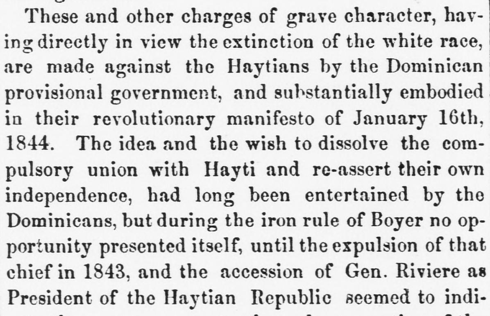
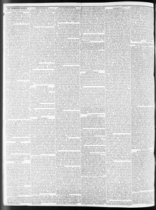

See the full pageVer la página completaThe idea and the wish to dissolve the compulsory unionLa idea y el deseo de disolver la unión forzosa
The newspaper reported that after the expulsion of Boyer in 1843 and the accession of Gen. Riviere, the Dominicans seized an opportunity while the garrison was reduced to capture the remaining troops, proclaim a provisional independent government in early January 1844, and issue a revolutionary manifesto on January 16, 1844. It described the Dominican population as consisting of pure whites—who were the intellectually predominant and ruling class—and mixed races of various colors, all of whom were constitutionally declared equal citizens before the law. Additionally, the excerpt noted that Santana, the Dominican liberator and first President, resigned in 1848 and was succeeded by Jimenez, who was described as a traitor.El periódico relató que tras el derrocamiento de Boyer en 1843 y la exaltación del general Rivière, los dominicanos aprovecharon la mengua de la guarnición para reducir a las tropas restantes, proclamar un gobierno provisional independiente a principios de enero de 1844 y promulgar una manifestación revolucionaria el 16 de enero de 1844. Describía a la población dominicana integrada por blancos puros —que constituían la clase intelectualmente rectora y gobernante— y razas mixtas de diversos matices, proclamados todos constitucionalmente ciudadanos iguales ante la ley. Añadía el extracto que Santana, libertador dominicano y primer presidente, renunció en 1848 y fue sucedido por Jimenes, a quien se tildaba de traidor.
FULL TEXT:TRADUCCIÓN:
These and other charges of grave character, having directly in view the extinction of the white race, are made against the Haytians by the Dominican provisional government, and substantially embodied in their revolutionary manifesto of January 16th, 1844. The idea and the wish to dissolve the compulsory union with Hayti and re-assert their own independence, had long been entertained by the Dominicans, but during the iron rule of Boyer no opportunity presented itself, until the expulsion of that chief in 1843, and the accession of Gen. Riviere as President of the Haytian Republic seemed to indi-Estos y otros cargos de carácter grave, teniendo directamente en vista la extinción de la raza blanca, son hechos contra los haitianos por el gobierno provisional dominicano, y sustancialmente incorporados en su manifiesto revolucionario del 16 de enero de 1844. La idea y el deseo de disolver la unión compulsoria con Haití y reafirmar su propia independencia, habían sido abrigados por largo tiempo por los dominicanos, pero durante el gobierno de hierro de Boyer ninguna oportunidad se presentó, hasta que la expulsión de ese jefe en 1843, y la ascensión del general Rivière como Presidente de la República Haitiana parecían indi-
[Editor's note: the paper writes of the east as part of Hayti. From 1822 to 1844 the Dominican Republic was held by Haitian military occupation, against its people's will; it restored its independence on February 27, 1844.][Nota del editor: el periódico habla del este como parte de Haití. De 1822 a 1844 la República Dominicana estuvo bajo ocupación militar haitiana, contra la voluntad de su pueblo; restauró su independencia el 27 de febrero de 1844.]
Wilmington Journal. Wilmington, N.C., August 15, 1851. Page 2.